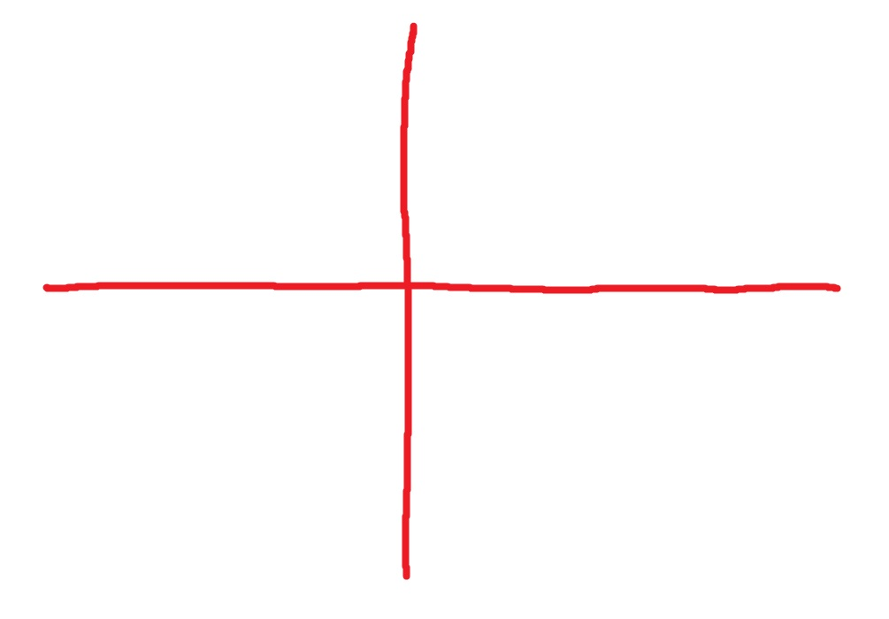
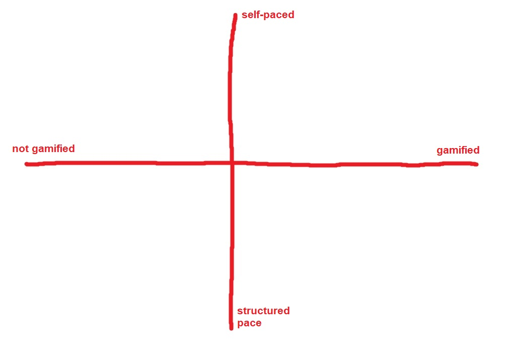
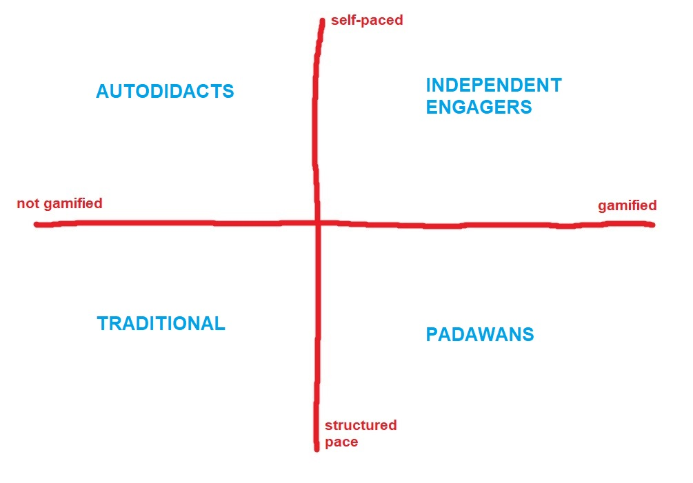
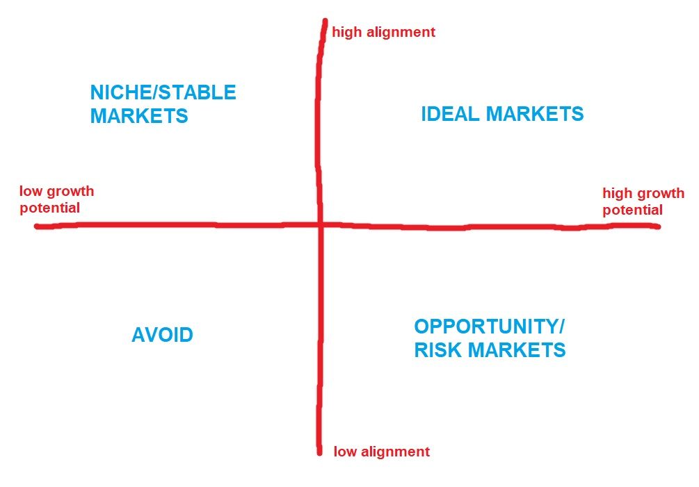

Business
I like to keep some mental models in my back pocket for quick but high-impact returns in various situations, especially if there's a lot of ambiguity. Sometimes, they can come in clutch to give a fresh perspective on things without needing much mental heavy lifting. I'll share more over time, but I'm kicking it off today with the 2x2 matrix.
Let's say your team needs to quickly strategize a way to solve an organizational problem where you don't have much information to go off, but a decision (or at least some movement in a certain direction) needs to be made soon, so you can't deploy a whole research phase. If the team isn't in the habit of operating in that kind of uncertainty, it can be easy to default to solving for the most salient variable X. That is, framing the decision as "Do we move forward with approach X?" And unless someone proactively says otherwise, the alternative decision is to NOT move forward with approach X. So, with "X vs. not X" arbitrarily bubbling up as the focal point of decision-making, the team's collective perceptions around X might build in a teeter-totter-like manner until a majority vote tips the decision in one direction. Depending on the team dynamic, chances are that someone will point out Y as a viable alternative to X (substituting for "not X")1, but still, majority rules.
For example, let's say a training program is due for a redesign, and we want to add a fresh new design element to boost learner interest and retention, whether the design is instructional or aesthetic in nature (we don't know yet). How could we approach it? Hm…Games are rewarding, right? So how about adding some gamification? That way, learners would feel rewarded to take the training and thus be more motivated. Okay, that sounds reasonable. All in favor, say "aye".
I'm convinced this happens more than one might think, but that's a separate conversation.
ENTER THE 2x2 MATRIX
Okay, let's take it back to the top with the same training program, again due for a redesign. And despite being arbitrary to begin with, let's still consider a gamified approach for the fun of it. How would a 2x2 matrix be used here? First, draw a coordinate plane, or the flag of England:

Gamification is a variable, so we'll assign it to the X axis. The right end of the axis would mean moving forward with gamifying, and the left end means deciding to not gamify. Now, let's come up with a second variable that could be relevant to our goals in improving learner interest and retention. Off the top of my head, let's assign the variable, "nature of pacing" to the Y axis, with the upper end of the axis meaning "self-paced" where the learner controls their own learning speed and progress, and the lower end means "structured pace" where the learner follows more traditional, instructor-led pacing with set timelines and schedules.
By the way, it doesn't matter which variable you put on the X or Y axis, and it doesn't matter which end of the axis you assign a particular state of that variable (though we tend to associate the right or upper ends with greater quantities of something).

What immediately comes out are four unique quadrants, characterized by combinations of our two variables: (1) gamified and self-paced learning, (2) gamified and structured pace learning, (3) not gamified and self-paced learning, and (4) not gamified and structured pace learning. And all of a sudden, it now compels us to think about what it means in practice for two variables to intersect, beyond merely describing highness and lowness. It's also nice, though not necessary, if you can come up with a unique label for each quadrant, a.k.a. a "persona", to really capture a sense of identity with unique motivations and sensibilities.
(1) A gamified and self-paced learning design is great for "Independent Engagers", or learners who thrive autonomously and by inferring their own learning through immersion in challenging situations that a gamified experience could bring at scale.
(2) A gamified and structured-pace design is great for "Padawans", or learners who derive a lot of learning value when they create their own learning through opportunities afforded by game mechanics, but might also want a coach to provide ongoing feedback.
(3) A not gamified and self-paced design could be great for "Autodidacts", or learners who tend toward being self-initiated or self-taught, and without the distractions of gamification.
(4) A not gamified and structured-pace design is great for "Traditional" learners who might prefer linear, more predictable, "what you see is what you get" approaches to learning.

Why do I find this so powerful? There are two key things happening here that don't happen with just an X vs. not-X relationship.
First, by adding dimensions to our schema, you're exponentially increasing the number of learner profiles you have to consider, which thus exponentially improves the specificity of your learning design rationale. If we were to add a third dimension (Z axis, coming out of/going into your screen), that would result in 8 unique profiles. If we added a fourth, then that's 16 profiles, which is how the Myers-Briggs Type Indicator is structured.
Second (which is enabled by but distinct from the first), it forces us to consider potential relationships between the dimensions. This step doesn't exist when you just have X vs. not X, since you can take either option "as is" and there's no apparent need to further interpret anything. But when you have to account for both dimensions of gamification and nature of pacing, the need to think about how they interact is a lot more salient. I actually often find the discussion generated by filling in the matrix is more valuable than the end decision itself.
For example: Although autodidacts and independent engagers both are characterized as self-paced, does that kind of self-initiation look the same between the two groups? Or is there something about the gamified aspect that might make one form of self-motivation qualitatively different from the other?
Whether that kind of conversation is genuinely helpful or just self-indulgent blather depends on how much your client values that level of instructional robustness, so your mileage may vary. It'll fall on you to guide that depth of dialogue. Either way though, a bonus of the 2x2 matrix is how extremely efficient it is. That's really helpful here because if decisions were going to be made in a quick X vs. Y manner in the first place, then chances are decision-makers won't have the patience for anything too academic anyway.
Here's another example of a 2x2 matrix used to guide new market opportunities for business expansion, in the most generic sense.
